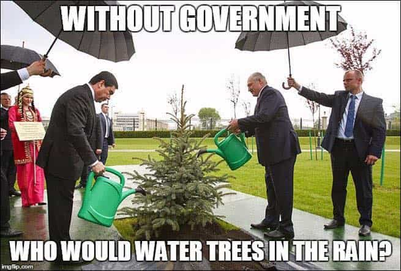
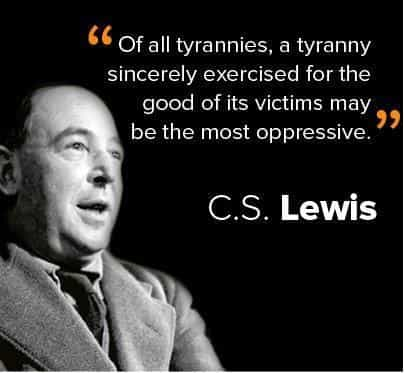
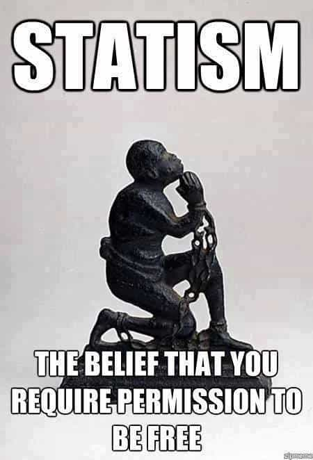

Corey is an iconoclast and the author of 'Man's Fight for Existence'. He believes that the key to life is for men to honour their primal nature. Visit his new website at primalexistence.com


Few weeks ago, I published an article calling for the political independence of America and I was pleased to see that many people were open to the idea, so I have decided that the readers are ready to explore the source of this philosophy: anarchism.
Ever since I took the black pill of anarchism, I haven’t been able to see the political world the same way. All that I’ve accepted as normal, all the power structures that I saw as both legitimate and inevitable, and my perception of personal freedom and autonomy were all flipped upside down. I realized that it was either anarchism or slavery—there is no other option.
So for those who are curious, here are eight points to guide you through one of the most misunderstood ideology for freedom.
No, this crazy feminist puke is not an anarchist. She probably doesn’t even have a clue what anarchism means.
As soon as the average person hears the word “anarchist,” the first image he conjures in his head is that of unemployed losers dressed in black, who are causing trouble for no good reason. This is unfortunately part true as the anarchist ideology has been hijacked by the leftists who turned it into a movement of their own (Ted Kaczynski made a prescient warning about this in his manifesto, Industrial Society and its Future). This was also the reason why I’ve been reluctant to take anarchism seriously for the longest time.
While I’m not a fan of saying “They’re not real _____!,” the case must be made against the fake anarchists of today who are giving the entire ideology a bad name. The fact is, while anarchism at its core is about the abolition of state power (and all other forms of rule from above) in favor of total freedom and self-determination, these leftists thugs, like the Antifa, are more interested in combating those whom they consider “fascists.”
And who is a fascist? Someone who rejects the ideals of globalism and equalism promoted by the establishment. So what we have with the leftist “anarchists” are bunch of goons who act as the unwitting foot-soldiers of the elites by fighting against the anti-establishment groups who may be more anarchist than they are. These leftists dregs are no more anarchist than some African dictatorship is a “republic.”

The best way to think of anarchism is to see it as a push for a total decentralization and full local autonomy rather than some nightmare scenario Thomas Hobbes liked to imagine. Anarchism is not about no rule, but self rule. This means no government interference, no coercion of any sort by the state, and no policing of your innate freedom.
The only rules you abide by are the ones you and your community decided for yourselves and the rule of nature—you are solely responsible for yourself and your tribe. If you can’t protect or support yourselves, or if your system of rule fails in anyway, you’re on your own with no government to bail you out.
One of the main argument against anarchism is that everything will cease to function and everyone will suffer in lawless destitution without the government’s graceful rule. This notion that people would be completely helpless and lost without the the state is a ridiculous one. Are we to believe that people are incapable of working for themselves and being responsible for their own lives? Are we some helpless children who can’t even defend ourselves without the police (as opposed to now where the government restricts weapons for citizens while criminals are free to use them)? Are we to think that the people won’t have any clue as to how to build and maintain roads, water supplies, and establish civic order without some incompetent and wasteful government doing it for them?
With anarchism, you’re simply cutting out the middleman and manager who mishandles your tax money (which they extorted from you). With anarchism, you get to live without the nanny who’s telling you what to think and how to act for the benefit of “progress” and and the good of all.
Leftist “anarchists” like these fools make the entire ideology look like a joke to everyone else.
There’s an anarchist group for just about any political ideology that isn’t mainstream today. The most popular ones are the various socialist strands and the anarcho-capitalists, but there are also many others including, but not limited to: anarcho-communism, anarcho-primitivism, Christian anarchism, anarcho-feminism (which is a joke), national-anarchism (a form of anti-statist nationalism), and so on. I’ll venture to declare that many other groups and organizations that don’t call themselves anarchists are also anarchist in nature as long as they challenge the current rule in favor of greater autonomy and self-determination.
Now, you don’t have to agree with any of these offshoots. All you have to recognize is that people get to determine their own way of life with anarchism, which contrasts to today’s world where we are forcibly integrated with people who we don’t even want to associate ourselves with while being restricted and having our freedoms eroded in the name of establishing social harmony.

Our greatest enemy is not the feminists, “Muslims,” or SJWs, but the state. The modern state, as represented by the globalist governments of today, is the number one enemy of men and it does not hide its blanket contempt for us. The system that rules over us does everything it can to divide us and control us like cattle.
Think about it: the insane PC culture would not exist if it weren’t for the state, feminism would have remained a lunatic fantasy of mad women if it weren’t for the governments that enable it, there would not be the systemic destruction of human race, culture, and masculinity if we weren’t forcefully herded, engineered, and conditioned. All the social, political, and cultural problems we witness today all have its roots in government control.
All men should remind themselves that the state has absolutely no right over them—none whatsoever. You were already born with all the freedom in the world until the state decided to limit your existence. You don’t need the government, the government needs you.
And if you still think the state has a right to rule over you, watch this video of a man and his family being harassed by government agents for no reason and see if you can still utter support for your masters with a straight face:

The biggest problem I have with nationalism is that most of its proponents fail to separate the statist nature of nationalism from the idea of promoting healthy existence of race and culture. Personally, the issue of blood and “civilization” is very far below the list of my priorities when compared to the need for freedom, privacy, autonomy, and so on. But not only do disturbing number of nationalists and “patriots” overlook these needs, but many seem willing to sacrifice them as part of their flag-worshiping ritual.
One only needs to observe how gladly the people consent to the government’s shift towards a total police state in the name of security against BLM riots and terrorism. But this sort of acquiescence to state control must be rejected. I don’t think it’s radical or impossible to preserve your political, cultural, and racial identity without maintaining a nation. In fact, it could probably be done more effectively without government interference.

The main reason why statism continues to persist is because most people are tricked into believing that they live in a society of freedom: the cult of democracy. Because citizens get to vote every few years, they are made to think that they enjoy true freedom because their leash is longer than some poor bastard’s in some faraway country—they are deceived into thinking that they don’t live in a farm because theirs is free range. But free range farm is still a farm.
You must remember that those who have real power are those who are unelected, often operating behind the curtains. And no matter who’s elected and running show, you are still ruled and still unfree. Not only that, more than half of the time, you’re ruled by a leader or a party you don’t even support.
The election circus and all the drama involved in it are a joke. The only true democracy is the one where you get to rule yourself—there can’t be exceptions.

I would argue that anarchism, at its core, is the most masculine political expression for the simple reason that it is the only ideology that advocates for total freedom and self-determination for the common man. In addition, anarchism is tribalistic to the core: you either fight for your tribe’s existence, or you perish along with it.
And those are exactly the reasons why feminism or any other form of progressivism will never sprout in an anarchist order. Where will the feminist harpies go to cry about “misogyny” when all the gynocentric institutions are gone? How will women extort and imprison their former husbands without the professional white-knights police? How many women will still harp about equality when they don’t have a government to lean on for “empowerment”?
Men, on the other hand, will have to be masculine, strong, and honorable (a la Jack Donovan’s The Way of Men) to survive and thrive in the new world. Cucks, betas, and other low-T males will be naturally selected one way or the other as their mommy government won’t be around to shelter them like it does now. Without governments, men will no longer have an excuse to sit around and hope that some sock puppet will navigate through the democratic mumbo-jumbo and not fuck things up too much.
Last, anarchism is a political ideology that doesn’t ask for permission. Anarchists will ask for nothing: no government handouts, no imaginary “rights,” and absolutely no permission for anything. Anarchists will do what they want and take what they can. I don’t know what more a man can ask for in this world.
An anarchist from a century ago once predicted that, in the future, everyone will either be socialists or anarchists. Overlooking the semantics, we can see this polarization forming today as people are increasingly becoming divided into two camps: the progressive, internationalist camp that wants universal equality in a global society where all humans become live in harmony thanks to technological innovations, versus the various resistors of all sorts that want to preserve their identity, beliefs, and way of life from being swallowed in this tidal of globalism.
The latter group includes: nationalists, traditionalists, racialists, anti-establishment movements, Russia and its allies (to an extent), and so on. And as national institutions slowly fade to the background while the people cry out ever louder for freedom and the preservation of their identities, more and more individuals will have to choose between accepting the new global order or resisting against it as anarchists; it will become progressively harder to just sit on the fence.
I’ve only been able to scratch the surface to give you an idea of what anarchism is at its core. For those who want to delve further, and for everyone else with more than a passing interest in politics, I highly recommend Attack the System by Keith Preston to shatter your old worldview.
Remember: It’s either freedom or nothing.
Read More: A Brief Introduction To The Country Formally Known As Sweden